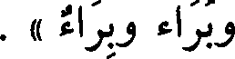

File: 000090.gt.txt (if the image is defective, simply delete all Arabic text and the line will be excluded)
وبركة .
File: 000091.gt.txt (if the image is defective, simply delete all Arabic text and the line will be excluded)
أوطأته« العشوة والعشوة والعشوة » ، وهي « الربوة والربوة والربوة »
File: 000092.gt.txt (if the image is defective, simply delete all Arabic text and the line will be excluded)
للمكان المرتفع ، وهي « وجنة ووجنة ووجنة » ، و« جذوة من النار وجذوة
File: 000093.gt.txt (if the image is defective, simply delete all Arabic text and the line will be excluded)
وجذوة » ، و« جثوة وجثوة وجثوة » ، وهي« الغشوة والغشوة والغشوة » ، وفيه
File: 000094.gt.txt (if the image is defective, simply delete all Arabic text and the line will be excluded)
« غلظة وغلظة وغلظة » ، والحرب« خدعة وخدعة » زاد يونس
File: 000095.gt.txt (if the image is defective, simply delete all Arabic text and the line will be excluded)
فعال بثلاث لغات
File: 000096.gt.txt (if the image is defective, simply delete all Arabic text and the line will be excluded)
« وخدعة » .
File: 000097.gt.txt (if the image is defective, simply delete all Arabic text and the line will be excluded)
هو « الزجاج والزجاج والزجاج » ، وهو مقطوع « النخاع والنخاع
File: 000098.gt.txt (if the image is defective, simply delete all Arabic text and the line will be excluded)
والنخاع » وهو الأبيض الذي في جوف الفقار ، وهو « قصاص الشعر
File: 000099.gt.txt (if the image is defective, simply delete all Arabic text and the line will be excluded)
وقصاص وقصاص » ، وهو « الوشاح والإشاح والوشاح » ، وفي طعامه
File: 000100.gt.txt (if the image is defective, simply delete all Arabic text and the line will be excluded)

« زوان وزؤان »(1) و « زوان » ، وهو « جمام المكوك وجمام وجمام »
File: 000101.gt.txt (if the image is defective, simply delete all Arabic text and the line will be excluded)
و «» صوان وصوان وصوان «»، عن أبي زيد: «» نحن منكم براء
File: 000102.gt.txt (if the image is defective, simply delete all Arabic text and the line will be excluded)

وبراء وبراء » .
File: 000103.gt.txt (if the image is defective, simply delete all Arabic text and the line will be excluded)
وقال الفراء : ليس في الكلام « فعلال - بفتح الفاء - من غير ذوات
File: 000104.gt.txt (if the image is defective, simply delete all Arabic text and the line will be excluded)
التضعيف إلا حرف واحد ، يقال : ناقة بها « خزعال » أي(1) : ظلع .
File: 000105.gt.txt (if the image is defective, simply delete all Arabic text and the line will be excluded)
قال : فأما ذوات التضعيف ف « القلقال » و « الزلزال » وما أشبه
File: 000106.gt.txt (if the image is defective, simply delete all Arabic text and the line will be excluded)
ذلك ، وهو مفتوح(2) اسم ؛ فإذا كسرته فهو مصدر ، وتقول : « قلقلته
File: 000107.gt.txt (if the image is defective, simply delete all Arabic text and the line will be excluded)
قلقالا » و « زلزلته [615] زلزالا » .
File: 000108.gt.txt (if the image is defective, simply delete all Arabic text and the line will be excluded)
قال سيبويه(3) : و « فعلال » من غير المضاعف (4) « حملاق »
File: 000109.gt.txt (if the image is defective, simply delete all Arabic text and the line will be excluded)
و « قنطار » و « شملال » ، والصفة « سرداح » و « هلباج » .
File: 000110.gt.txt (if the image is defective, simply delete all Arabic text and the line will be excluded)
وقال سيبويه(5) : وقد جاء « فعلاء » بفتح العين ، في الأسماء دون
File: 000111.gt.txt (if the image is defective, simply delete all Arabic text and the line will be excluded)
الصفات ، قالوا : « قرماء » و « جنفاء » وهما مكانان ، وأنشد(6) :
File: 000112.gt.txt (if the image is defective, simply delete all Arabic text and the line will be excluded)
على قرماء عالية(7) شواه كأن بياض غرته خمار
File: 000113.gt.txt (if the image is defective, simply delete all Arabic text and the line will be excluded)
وأنشد أيضا(8) :
File: 000114.gt.txt (if the image is defective, simply delete all Arabic text and the line will be excluded)
رحلت إليك من جنفاء حتى أنخت فناء بيتك بالمطالي
File: 000115.gt.txt (if the image is defective, simply delete all Arabic text and the line will be excluded)
و « أفكل » وأشباهذلك ؛ إلا « أولقا » فإن الهمزة من نفس الحرف ، ألا ترى
File: 000116.gt.txt (if the image is defective, simply delete all Arabic text and the line will be excluded)
أنك تقول « ألق الرجل » ، قال : وهو فوعل ، و « أرطى » لأنك تقول « أديم
File: 000117.gt.txt (if the image is defective, simply delete all Arabic text and the line will be excluded)
مأروط » ولو كانت الهمزة زائدة لقلت مرطي .
File: 000118.gt.txt (if the image is defective, simply delete all Arabic text and the line will be excluded)
قال سيبويه(1) : و « إمر » و « إمع » الهمزة من نفس الحرف ؛ لأن
File: 000119.gt.txt (if the image is defective, simply delete all Arabic text and the line will be excluded)
إفعلا (2) لا يكون وصفا ، وإنما (3)هو فعل ، و« إلق » من التألق ، كذلك
To Save: `Ctrl+s`, make sure to choose `Webpage, complete`!